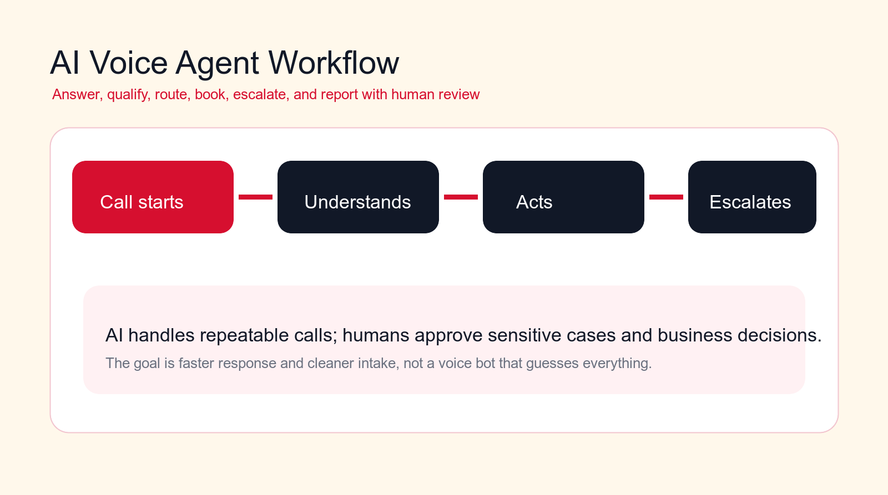
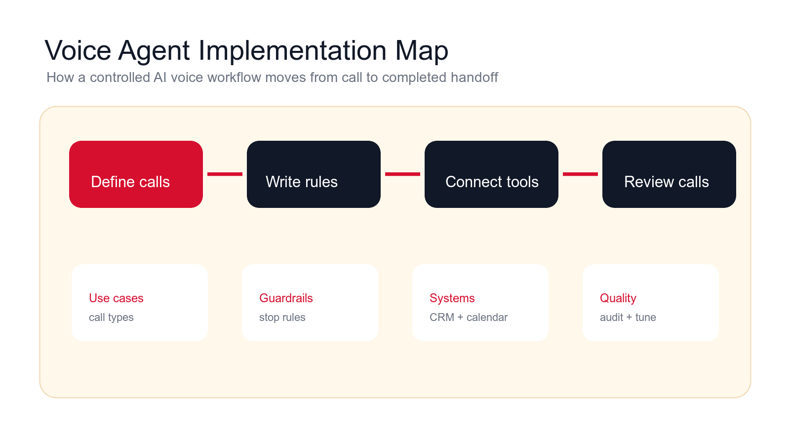
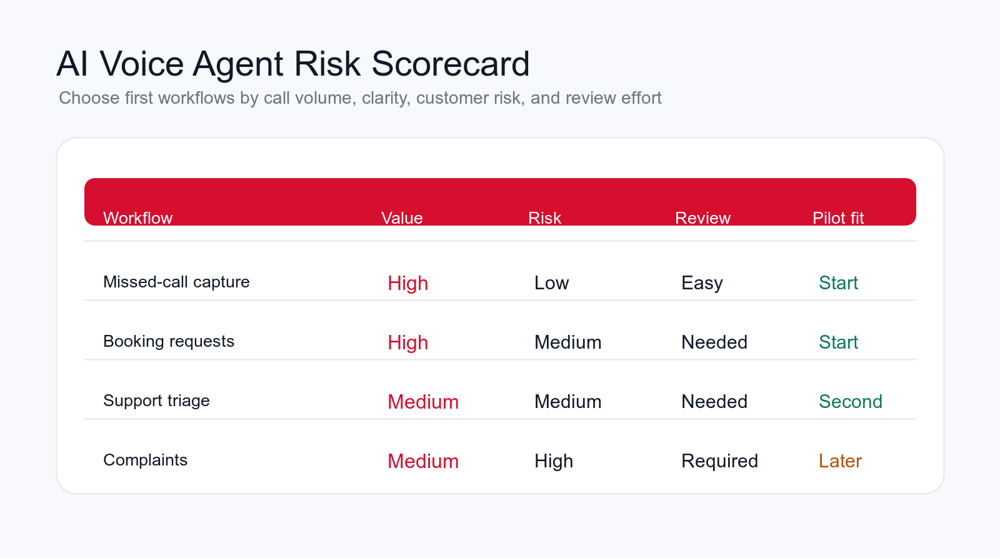

AI Voice Agent: Use Cases, Risks, and Implementation Plan
An AI voice agent can answer calls, qualify leads, book appointments, route support, and handle routine phone work. The value comes from choosing the right call workflows and putting strict guardrails around anything sensitive.

Best first pilot
Start with missed-call capture, booking requests, lead intake, or reminders before automating complex conversations.
Focus
AI voice agent
Best for
Teams evaluating voice automation
Best first workflow
Missed-call capture
Main service
AI Agent Development
TL;DR
An AI voice agent is best used for repeated, rule-based phone workflows: missed-call capture, after-hours intake, appointment booking, lead qualification, support triage, account status checks, payment or billing intake, reminders, surveys, internal helpdesk calls, multilingual routing, and escalation summaries. The main risks are wrong promises, poor escalation, privacy mistakes, caller frustration, weak integrations, and unclear accountability. Start with one call type, write strict rules, connect only the systems needed, keep humans in review, and measure call quality before expanding.
An AI voice agent can be useful when phones are creating delays, missed leads, inconsistent intake, or too much repeated work for staff. It can answer routine calls, ask approved questions, book appointments, summarize conversations, update systems, and route callers to the right human when the conversation needs judgment.
It can also create problems quickly. A weak voice agent can frustrate callers, misunderstand urgency, promise the wrong thing, collect incomplete details, or make the company sound less trustworthy. Voice is more sensitive than a form or chat because the caller expects a real-time conversation and may be upset, rushed, or confused.
This guide explains practical AI voice agent use cases, the risks to control, and a rollout plan for implementation. It is written for business owners, operations teams, sales leaders, support managers, local service companies, agencies, clinics, and B2B teams that want call automation without losing customer trust.
Quick Answer: Use AI Voice Agents for Repeated Calls First
The best first AI voice agent workflows are repeated, easy to classify, and easy to review. Missed-call capture, after-hours intake, booking requests, lead qualification, reminder calls, and basic support triage are usually safer first pilots than complaints, refunds, emergencies, negotiations, or complex account decisions.
The voice agent should prepare a clean handoff. A good call outcome includes who called, why they called, urgency, required follow-up, requested service, booking status, escalation reason, and the system update. The goal is not a voice bot that guesses everything. The goal is faster response, cleaner intake, and better routing.
If you are unsure where to start, map your call types for two weeks. Count missed calls, after-hours calls, booking requests, lead inquiries, support questions, billing questions, and escalations. The first pilot should be the highest-volume workflow with the clearest rules and lowest customer risk.
| Voice workflow | Good automation | Bad automation | Best control |
|---|---|---|---|
| Call intake | Captures need, caller, urgency, and next step. | Asks vague questions and loses context. | Use a required intake packet. |
| Booking | Books approved appointment types only. | Books anyone into any calendar slot. | Use service and eligibility rules. |
| Support triage | Summarizes issue and routes to support. | Pretends to solve problems it cannot solve. | Escalate uncertainty and upset callers. |
| Outbound calls | Handles reminders and confirmations with clear consent. | Cold-calls without context or permission. | Use approved lists and opt-out handling. |
What an AI Voice Agent Actually Does
An AI voice agent is an AI-powered phone or voice workflow that can listen, respond, ask questions, call APIs, update systems, and hand off conversations. It may use speech recognition, a language model, a voice model, business rules, integrations, and logging to handle specific call types.
The useful part is not just the voice. The useful part is the workflow behind the voice. A production AI voice agent needs approved scripts, call-type rules, escalation criteria, calendar or CRM access, privacy controls, recording rules, call summaries, testing, and monitoring. Without those pieces, the demo may sound polished but the real business workflow will fail.
A strong voice agent is narrow and honest. It knows what it can handle, what it should ask, what it should never promise, and when to bring in a person. It should be able to say that it will take details for the team rather than pretending it can solve every situation.
Where an AI Voice Agent Fits in the Operations Stack
A voice agent should not become a separate phone island. It should connect calls to the systems the business already uses: phone system, CRM, calendar, help desk, billing tool, order system, internal task manager, and reporting dashboard. The call is the trigger. The business value comes from the handoff after the call.
A practical setup has five parts. First, the call is routed to the voice workflow. Second, the agent identifies the call type and asks approved questions. Third, it takes an action such as booking, creating a task, opening a ticket, or preparing a callback. Fourth, it escalates anything outside scope. Fifth, it writes a clear summary and quality data for review.
This structure keeps the voice agent accountable. If the caller asks for something sensitive, the agent stops. If the calendar has no availability, it explains the next step. If the CRM record may already exist, it flags a possible match. If the confidence is low, it routes to a human.
How to Choose the First AI Voice Agent Use Case
Choose the first use case by call volume, clarity, customer risk, integration effort, and review ease. A good first call workflow happens often, follows a repeatable pattern, uses information you can access, and has a clear escalation path. A weak first workflow requires emotional judgment, policy interpretation, pricing negotiation, or complex troubleshooting.
The first pilot should have a measurable result. Useful metrics include missed-call recovery, booking accuracy, lead completeness, support routing accuracy, callback speed, abandoned-call reduction, and call summary quality. "More AI" is not a metric. "More answered calls" is not enough if callers are frustrated or staff do not trust the summaries.
Start where automation reduces obvious waste. If staff spend hours returning routine calls, start with missed-call capture. If appointments are booked manually all day, start with booking. If support gets the same intake questions repeatedly, start with support triage. Pick one workflow and make it good.
AI Voice Agent vs IVR vs AI Receptionist
An AI voice agent is different from a traditional IVR menu. An IVR usually asks callers to press numbers or follow a rigid tree. It can route calls, but it struggles when callers describe a problem in natural language. A voice agent can listen to the caller, classify the request, ask follow-up questions, call business systems, and prepare a structured handoff.
It is also related to, but not identical to, an AI receptionist. An AI receptionist is usually focused on front-desk work: answering calls, booking appointments, capturing leads, and routing common requests. An AI voice agent can include those workflows, but it may also support outbound reminders, internal helpdesk calls, account status checks, payment intake, survey calls, or specific operational call flows.
The difference matters because the first implementation should match the job. If the business only needs basic routing, a simple phone tree may be enough. If the business needs conversational intake, calendar checks, CRM summaries, and escalation rules, a voice agent makes more sense. If the goal is front-desk coverage, the project may be best framed as an AI receptionist with clear call-handling rules.
Do not choose the technology first. Choose the call outcome first. What should happen after a successful call? A booked appointment, a qualified lead, a support ticket, a callback task, a payment follow-up, or an escalation summary? Once that outcome is clear, the right combination of voice AI, workflow automation, integrations, and human review becomes easier to design.
Free voice workflow check
Find your first AI voice agent workflow.
Drop your email and we will send a first-pass recommendation for the safest voice workflow to automate first.
No spam. We use this to reply with the recommendation.
1. Missed-Call Capture
Missed-call capture is often the safest first AI voice agent use case. The caller tries to reach the business, nobody answers, and the agent calls back or sends the caller into a short intake path. It can collect the caller's name, reason for calling, urgency, preferred callback time, and whether they are a new or existing customer.
This workflow does not need to solve the whole customer problem. It needs to prevent the lead or request from disappearing. The voice agent can create a task, summarize the call, and route it to the correct owner.
The guardrail is honesty. The agent should not imply that a person is already reviewing the request if nobody is. It should collect useful information and set the right expectation for follow-up.
2. After-Hours Intake
After-hours calls are another practical use case. Many businesses receive high-intent calls outside working hours but have no clean capture process. An AI voice agent can answer, explain availability, collect the request, classify urgency, and offer a booking or callback path.
The workflow should include emergency or urgent-call rules when relevant. If a caller describes something outside the safe scope, the agent should provide the approved escalation instruction or route to the right human path.
Measure the workflow by recovered calls, booked appointments, accepted leads, completed callbacks, and caller complaints. A system that captures calls but creates confusion is not ready to expand.
3. Appointment Booking and Rescheduling
Booking is a high-value AI voice agent workflow because it is repetitive and measurable. The agent can ask qualification questions, confirm service type, check availability, book the correct appointment, send confirmation, and collect missing details.
The booking rules need to be exact. Which appointment types can be booked automatically? Which require approval? What calendar should be used? What buffer time is required? Which locations or service areas are valid? These rules should be written before the agent handles real callers.
Rescheduling can be automated too, but policies matter. The agent should confirm identity, find the appointment, explain available options, and update the calendar only when the caller clearly agrees.

4. Lead Qualification and Sales Routing
AI voice agents can qualify inbound sales calls by asking a short set of approved questions. The agent can capture the caller's problem, company, role, timeline, location, budget signal, service interest, and urgency. It can then route the lead to the right owner.
The agent should not decide strategic fit alone. It can label a lead as strong fit, possible fit, or needs review, then explain why. Sales should still approve important routing decisions, especially for large accounts, complex requests, or unclear needs.
This workflow saves time because sales receives a structured call summary instead of a vague voicemail. It also improves CRM hygiene when the call creates or updates the right record.
5. Customer Support Triage
Support triage is useful when callers repeat the same intake details. The voice agent can identify the customer, summarize the issue, classify severity, ask for missing information, and create a support ticket. It can route urgent or upset callers to a human.
The agent should not pretend to fix problems it cannot fix. It can provide approved basic guidance, but its main job is to collect the right information and get the request into the correct queue.
A good support triage handoff includes customer name, account, issue summary, affected product or service, urgency, attempted steps, preferred contact method, and escalation reason.
6. Order, Appointment, or Account Status Checks
Many calls ask for basic status: order updates, appointment time, project status, service window, document status, or account information. A voice agent can answer these calls when it has reliable access to the correct system and strict identity rules.
The risk is data accuracy. If the connected system is outdated, the voice agent will repeat outdated information. The workflow should show what source was used and route uncertain cases to staff.
Identity checks matter. The agent should not reveal sensitive account details without approved verification. Start with low-risk status information before expanding to anything private.
Build a controlled voice pilot
Want voice automation without caller frustration?
We can map your call flow, choose the first use case, define escalation rules, and build an AI voice agent pilot with human review.
We will reply with a practical first-workflow recommendation.
7. Billing and Payment Intake
Billing calls often need careful intake rather than full automation. The voice agent can classify the question, collect invoice number, account details, payment status, missing documents, and requested next step. It can then route the case to finance.
Payment and billing workflows require strong controls. The agent should not negotiate disputes, approve refunds, change terms, or take sensitive payment data unless the business has a compliant, approved process.
The safer first workflow is intake and routing. Finance receives a clean summary, and the caller gets a clear expectation for follow-up.
8. Outbound Reminders and Confirmations
AI voice agents can make outbound reminder calls for appointments, deliveries, document requests, renewals, and scheduled follow-ups. This can reduce no-shows and manual reminder work when the call list is approved.
Consent and opt-out handling matter. The business should know who can be called, what message is approved, when calls can be made, and how a caller can stop future reminders. Do not use a voice agent for aggressive outbound campaigns without a compliant process.
A reminder call should be short. It should confirm the appointment or action, collect a simple response, and route exceptions to staff.
9. Feedback and Satisfaction Calls
Feedback calls can be automated when the questions are short and the caller has a clear reason to respond. The voice agent can ask about satisfaction, unresolved issues, service quality, or next-step interest, then summarize the response.
This workflow is useful because feedback often stays unstructured. The agent can categorize comments, flag complaints, identify follow-up needs, and report recurring themes.
The risk is tone. A robotic feedback call can feel dismissive after a poor experience. If the caller sounds upset or mentions a serious problem, the workflow should escalate to a person.
10. Internal Helpdesk and Employee Requests
Voice agents can also support internal workflows. Employees may call for IT help, facility issues, HR process questions, equipment requests, or operations support. The agent can collect the issue, classify it, create a ticket, and route it to the right team.
Internal workflows are often safer than customer-facing workflows because the business can train employees on what the voice agent handles. Still, sensitive HR, payroll, legal, or security issues should escalate.
This use case saves time when phone requests are currently turned into manual notes or informal chat messages. It creates a cleaner queue and fewer lost requests.
11. Language Detection and Routing
A voice agent can detect caller language, capture the basic request, and route the caller to the right team or callback path. This can improve access when the business receives calls from customers who do not all use the same language.
Translation should be treated carefully. The agent should show uncertainty and avoid making sensitive commitments across languages unless the business has approved the workflow. For important matters, it may be better to collect the request and schedule a callback with the right person.
The best first version is routing and intake, not complex negotiation or advice. That improves caller experience without overextending the system.
12. Escalation Summaries for Human Handoff
Even when the voice agent cannot handle the full call, it can still improve the human handoff. It can collect the caller's name, reason, urgency, account, prior steps, and emotional tone, then send a summary to the person taking over.
This is especially useful for complex support, complaints, billing disputes, urgent callbacks, and sales calls that need a specialist. The human starts with context instead of asking the caller to repeat everything.
The handoff should be fast. If the agent knows it cannot help, it should not keep the caller in a long loop. A clean escalation is part of a good voice agent design.

AI Voice Agent Risks to Control
The first risk is wrong promises. A voice agent must not invent pricing, timelines, policies, eligibility, refunds, or technical answers. It should use approved knowledge and escalate when the answer is missing.
The second risk is poor escalation. If callers cannot reach a person when they need one, the system will damage trust. Escalation rules should include upset callers, emergencies, sensitive topics, unclear requests, repeated failures, and explicit requests for a human.
The third risk is privacy and consent. Voice workflows may involve recordings, personal data, account details, and outbound calls. The business needs a clear policy for disclosure, storage, access, retention, and opt-out handling.
The fourth risk is integration failure. If the calendar, CRM, ticket system, or status database is wrong, the voice agent will produce wrong outcomes. System reliability is part of call quality.
The fifth risk is caller experience. Latency, interruptions, awkward phrasing, repeated questions, and unclear handoff can make callers angry. Voice agents need real call testing, not only script review.
Guardrails That Keep Voice Automation Safe
Start with scope. Define exactly which call types the agent can handle and which it must escalate. A voice agent that tries to handle every call will fail more often than a narrow agent that handles one workflow well.
Use approved scripts and knowledge. The agent should know business hours, service descriptions, booking rules, intake questions, escalation instructions, and approved responses. It should not improvise company policy.
Keep human review for sensitive cases. Pricing, legal or medical issues, refunds, complaints, contracts, emergencies, and emotional calls should route to people. The AI can summarize the situation, but it should not own the decision.
Review calls regularly. During the pilot, sample recordings or transcripts, compare summaries against the actual call, inspect failed calls, and track where callers ask for a human. Use those findings to improve the workflow.
What Not to Automate First
Some call types should not be the first AI voice agent pilot. Complaints, emergencies, refund disputes, pricing negotiations, legal or medical advice, account cancellations, angry customers, and complex troubleshooting all require stronger human judgment. The voice agent can collect context and route the caller, but it should not own the resolution.
Avoid starting with open-ended outbound sales calls. Voice agents can support reminders and confirmations, but cold outbound calling creates brand, consent, compliance, and quality risks. If outbound is part of the roadmap, start with approved customer lists, clear opt-out handling, and narrow scripts that do not make claims or pressure the caller.
Also avoid automating call types where the business itself does not have clear rules. If employees disagree on who qualifies, what can be booked, which calls are urgent, or what should be promised, the voice agent will not solve the disagreement. It will make the inconsistency more visible.
Security, Consent, and Data Controls
Voice workflows often touch sensitive information, so security and consent need to be designed before launch. Decide whether calls are recorded, how callers are informed, where transcripts are stored, who can access summaries, how long records are retained, and which data should never be collected by the agent.
In the United States, outbound calls using AI-generated voices should be treated as covered by artificial or prerecorded voice rules under FCC and TCPA guidance. Before any outbound pilot, confirm prior consent, disclosure, opt-out handling, call timing, and state-specific requirements with the business owner responsible for compliance.
Permissions should be narrow. A booking agent may need calendar access and basic customer contact fields. It does not need access to finance records. A support triage agent may need account status and ticket history. It does not need access to private internal notes unrelated to support.
Write down what the agent can say and what it cannot say. It should not read sensitive account details aloud unless the caller is verified and the workflow is approved. It should not collect payment card details unless the business has a compliant process. It should not forward recordings or transcripts to broad internal channels.
Auditability matters. Keep a record of the call summary, actions taken, system updates, escalation reason, and human corrections. That audit trail helps the team investigate mistakes, improve the workflow, and maintain accountability as the voice agent expands.
A Practical 90-Day AI Voice Agent Implementation Plan
In the first thirty days, map call types and choose the first workflow. Review call logs, missed calls, after-hours volume, booking requests, support calls, lead calls, and escalation patterns. Write the first use case: trigger, caller type, questions, allowed actions, escalation rules, systems, and success metric.
In days thirty to sixty, build a controlled pilot. Connect only the phone system and business systems required for the workflow. Write approved scripts, test edge cases, define call recording and data retention rules, and run internal test calls before real callers use it.
In days sixty to ninety, launch to a limited call type, time window, or phone line. Review call summaries, escalation quality, caller drop-off, booking accuracy, lead completeness, and staff trust. Expand only when the workflow proves it can improve response time without hurting caller experience.
The Minimum Useful AI Voice Agent
The minimum useful voice agent has one call type, one clear goal, one system update, and one escalation path. For example, it can answer missed calls, collect the caller's reason and urgency, offer a callback window, create a CRM task, and escalate urgent cases. That is enough to prove value without automating the entire phone system.
What to Avoid in the First Build
Avoid broad call handling, complaint resolution, policy disputes, payment decisions, complex troubleshooting, emergency guidance, and automatic outbound calling without consent controls. Also avoid giving the agent write access to many systems before call quality is proven.
Questions to Answer Before Launch
- Which call type is the pilot responsible for?
- Which topics require immediate human escalation?
- Which scripts, policies, and knowledge sources are approved?
- Which systems can the voice agent read or update?
- How will call quality, failed calls, and caller complaints be reviewed?
How to Measure AI Voice Agent Results
Measure AI voice agents by business movement and caller experience. Useful metrics include answer rate, missed-call recovery, booking accuracy, lead completeness, escalation rate, support routing accuracy, abandoned-call rate, average handling time, callback speed, and caller complaint rate.
Also measure staff trust. Do employees use the call summaries? Do they accept the routing? Do they have to replay calls because the summary is weak? Do they find the agent's intake complete? Staff adoption is a strong signal that the workflow is useful.
Track exceptions. Every failed call should improve the system: better stop rules, clearer scripts, improved integration, stronger knowledge, or faster human handoff. Voice automation should improve through real call review, not guesswork.
When to Hire an AI Automation Agency
A simple voice tool can handle basic demos. An AI automation agency becomes useful when the voice agent needs to connect to calendars, CRM, ticketing, support, lead routing, reporting, approval paths, and custom business rules.
A good agency should map the call workflow, choose the first use case, write guardrails, connect systems, test real call scenarios, define review metrics, and support rollout. It should not sell a generic voice bot and leave the team with unclear escalation rules.
The agency should also say when not to automate yet. If booking rules are unclear, call categories are undocumented, data is unreliable, or there is no human handoff path, the first step may be workflow cleanup.
Final Checklist: Build an AI Voice Agent Without Losing Trust
- Start with one repeated call workflow, not every phone call.
- Use AI to capture intake, book approved appointments, route support, summarize calls, and create handoffs.
- Keep humans responsible for pricing, complaints, emergencies, sensitive advice, and complex decisions.
- Use approved scripts, clear stop rules, consent controls, and data retention policies.
- Connect only the systems needed for the pilot.
- Measure caller experience, staff trust, business outcomes, and failed-call patterns.
An AI voice agent should make phone operations faster and clearer. It should answer repeated calls, collect better information, route work to the right owner, and escalate when judgment matters. If it makes callers repeat themselves or traps them in a bad conversation, the workflow needs repair.
Start narrow, test with real calls, keep review in place, and expand only after the voice agent proves it can protect both speed and trust.
The implementation should feel boring before it feels ambitious. A narrow voice workflow with clear scripts, reliable system updates, and fast human escalation will outperform a broad agent that sounds impressive but fails on real callers. Treat the first pilot as an operations project, not a novelty. The best signal is not that the agent can talk for a long time. The best signal is that staff receive better call summaries, callers reach the right next step, and exceptions are handled without drama.
Free AI voice workflow review
Get a first-pass recommendation for your voice workflow.
Send your email and we will reply with a practical view of which call workflow should become your first AI voice agent pilot.
No spam. We use this to reply with the recommendation.
FAQ: AI Voice Agent
What is an AI voice agent?
An AI voice agent is an AI-powered phone workflow that can understand callers, ask questions, answer approved requests, book appointments, create summaries, update systems, and escalate complex calls to humans.
What AI voice agent use case should I automate first?
Start with a frequent, lower-risk workflow such as missed-call capture, after-hours intake, booking requests, lead qualification, reminder calls, or support triage.
What are the biggest AI voice agent risks?
The main risks are wrong promises, poor escalation, privacy mistakes, weak integrations, caller frustration, unclear consent, and giving the agent too much scope before call quality is proven.
Can an AI voice agent replace human phone staff?
Usually the best use is support, not full replacement. Voice agents can handle routine intake, booking, routing, reminders, and summaries while humans handle judgment, sensitive conversations, and exceptions.
Can Go Expandia build an AI voice agent?
Yes. Go Expandia can map the call workflow, choose the first voice agent use case, design guardrails, connect systems, test real scenarios, and launch a controlled rollout.
About Bailey Roque
Bailey Roque writes for Go Expandia on AI automation, AI agent development, workflow design, AI consulting, and practical rollout models for business teams.
Related posts and services
Keep planning your AI call automation roadmap
Reception guide
AI Receptionist
See how to automate calls, booking, and lead intake with safer escalation.
Lead guide
AI Lead Generation
Compare lead workflows that can be automated without lowering sales quality.
Main service
AI Agent Development
Build controlled AI agents with integrations, guardrails, and human review.
Ready to Build a Controlled AI Voice Agent?
Go Expandia helps companies choose the right call workflow, design safe escalation, and launch AI voice automation that staff and callers can trust.